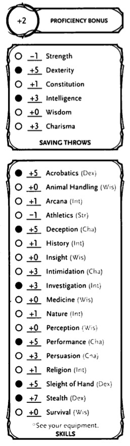
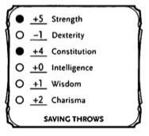
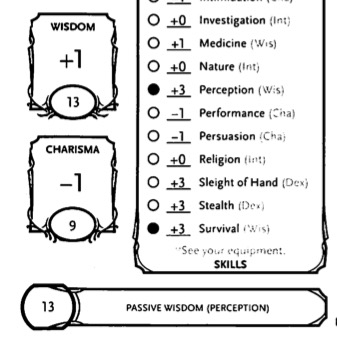

The game can be broken down into three repeating steps:
The following six abilities provide a quick game description of every character's and monster's physical and mental characteristics:
Each ability has an ability score to measure it, which provides an ability modifier.
When the outcome of an action is uncertain the game relies on the roll of a d20 to determine success or failure.
The three main types of d20 rolls are:
For each one you roll a d20 and add any bonuses or penalties, and compare the total to a target number. If the total equals or exceeds the target number, you succeed. Here are the steps in more detail:
Difficulty Class (DC) is the target number for ability checks or saving throws.
Armor Class (AC) of a target is the target number for an attack roll.
The DM usually determines target numbers and tells players whether their ability checks, attack rolls and saving throws succeed or fail.
Advantage: roll 2d20 and use the greater number.
Disadvantage: roll 2d20 and use the lesser number.
If you have both advantage and disadvantage on the same roll they cancel each other out - roll 1d20
If you have multiple advantages or disadvantages, you still only roll 2d20
If you have advantage or disadvantage and something in the game, such as the halfling's lucky trait, allows yo to reroll the d20, you can only reroll one die. For example, if a halfling has advantage on an ability check and rolls a 1 and 13, the halfling could use the Lucky trait to reroll the 1.
To make an ability check roll a d20 and add the appropriate ability modifier. If the total equals or exceeds the DC the ability check is a success. Otherwise, the check is a failure.
Since characters can often try unpredictable things the DM must decide what kind of ability check and DC to use in a particular situation.
You might be particularly skilled at a certain task related to an ability check. You character sheet will list each character's proficiencies with skills and special tools, and the monster statistics in the adventure book show monster's proficiencies.
If you have proficiency in a skill you add your proficiency bonus to ability checks relating to those skills.
Proficiency in a skills means that character can add his proficiency bonus to ability checks that use that skill.
Sometimes one character's or monster's efforts are directly opposed to another's. This can occur when both of them are trying to do the same thing and only one can succeed, such as attempting to snatch up a magic ring that has fallen on the floor.
This situation also occurs when one of them is trying to prevent the other one from accomplishing a goal - when a monster tries to force open a door that a PC is holding closed.
In situations like these, the outcome is determined by a special form of ability check, called a contest.
Both participants in a contest make ability checks appropriate to their efforts. They apply all appropriate bonuses and penalties, but instead of comparing the total to a DC, they compare the total of their two checks. The player with the higher check wins.
If the contest results in a tie, the situation remains the same as it was before the contest.
Each ability covers a broad range of capabilities, including skills that a character can be proficient in. A skill represents a specific aspect of an ability score, and a character's proficiency in a skill demonstrates focus on that aspect.
Measures bodily power, athletic training and the extent to which you can exert raw physical force.
A Strength check can model an attempt to lift, push, pull or break something, to force your body through an space or to otherwise apply brute force to a situation.
The Athletics skill reflects aptitude in certain kinds of Strength checks.
Athletics. You Strength (Athletics) check covers difficult situations you encounter while climbing, jumping or swimming. Examples include the following activities:
Dexterity measures physical agility, reflexes and balance.
A Dexterity check can model any attempt to move nimbly, quickly or quietly, or to keep from falling on tricky footing.
The Acrobatics, Sleight of Hand, and Stealth skills reflect aptitude in certain kinds of Dexterity checks.
Acrobatics covers your attempt to stay on your feet in a trick situation, such as when you're trying to run across a sheet of ice or balance on a tightrope. The DM might call for Dexterity (Acrobatics) check to see if you can perform acrobatic stunts including dives, rolls, somersaults and flips.
Sleight of Hand. When you attempt an act of legerdemain or manual trickery, such as planting an object on someone or concealing an object on your person, make a Dexterity (Sleight of Hand) check.
Stealth. Make a Dexterity (Stealth) check when you attempt to conceal yourself from enemies, like sneaking past guards or sneaking up on someone without being seen or heard.
Constitution measures health, stamina and vital force.
Constitution checks are uncommon and no skills apply because the endurance this ability represents is largely passive rather than involving a specific effort.
A Constitution check can model your attempt to push beyond normal limits, however.
Intelligence measures mental acuity, strength of recall and the ability to reason.
An Intelligence Check comes into play when you need to draw on logic, education, memory or deductive reasoning.
Arcana. Your Intelligence (Arcana) check measures your ability to recall lore about spells, magic items, eldritcch symbols, magical traditions, the planes of existence, and the inhabitants of those planets.
History. Your Intelligence (History) check measures your ability to recall lore about historical events, legendary people, ancient kingdoms, past disputes, recent wars and lost civilizations.
Investigation. Make an Intelligence (Investigation) check when you're looking for clues and need to make deductions based on those clues. You might deduce the location of a hidden item or discern from a wound what kind of weapon dealt it. Poring through ancient scrolls in search of a hidden fragment of knowledge might also call for an Intelligence (Investigation) check.
Nature. Your Intelligence (Nature) check measures your ability to recall lore about terrain, plants, and animals, the weather and natural cycles.
Religion. Your Intelligence (Religion) check measures your ability to recall lore about deities, rites and prayers, religious hierarchies, holy symbols, and the practices of secret cults.
Wisdom reflects how attuned you are to the world around you, representing the perceptiveness and intuition.
A Wisdom check might reflect an effort to:
Animal Handling. When there is any question whether you can calm down a domesticated animal, keep a mount from getting spooked or intuit an animal's intentions, make a Wisdom (Animal Handling) check. This is also used to control your mount when you attempt a risky maneuver.
Insight. Your Wisdom (Insight) check determines if you can determine the true intentions of a creature, such as when searching out a lie or predicting someone's next move. Doing so involves gleaning clues from body language, speech habits, and changes in mannerisms.
Medicine. A Wisdom (Medicine) check lets you try to stabilize a dying companion or diagnose an illness.
Perception. Your Wisdom (Perception) check lets you spot, hear or otherwise detect the presence of something. It measures your general awareness of your surroundings and the keenness of your senses.
Most commonly this is used to spot things that are obscured or easy to miss, whether they are orcs lying in ambush on a road, thugs hiding in the shadows of an alley. You might also try to hear a conversation through a closed door, eavesdrop under an open window or hear monsters moving stealthily in the forest.
Survival. The DM might ask you to make a Wisdom (Survival) check to follow tracks, hunt wild game, guide your group through frozen wastelands, identify signs that owlbears live nearby, predict weather or avoid quicksand and other natural hazards.
Charisma measures you ability to interact effectively with others and includes such factors as confidence and eloquence.
The DM might use a Charisma check when you try to influence or entertain others, make an impression, tell a convincing lie or when you are navigating tricky social situations.
Deception. Your Charisma (Deception) check determines whether you can convincingly hide the truth, either verbally or through your actions. Typical situations include trying to fast-talk a guard, con a merchant, earn money through gambling, pass yourself off in a disguise, dull someones suspicions with false assurance, or maintain a straight face while telling a blatant lie.
Intimidation. When you attempt to influence someone through overt threats, hostile actions and physical violence, the DM might ask you to make a Charisma (Intimidation) check. Examples include trying to pry information out of prisoner or convincing street thugs to back down from a confrontation.
Performance. Your Charisma (Performance) check determines how well you can delight an audience with music, dance, acting, storytelling or some other form of entertainment.
Persuasion. When you attempt to influence someone or a group of people with tact, social graces or good nature, the DM might ask you to make a Charisma (Persuasion) check. Examples of persuasion include convincing a chamberlain to let your party see the king or negotiation peace between waring tribes.
A saving throw represents an attempt to resist or avoid a spell, trap, poison, disease or similar threat. You don't normally decide to make a saving throw, you are forced to do so.
To make a saving throw, roll 1d20 and add the appropriate ability modifier. For example, you use your Dexterity modifier for a Dexterity saving throw.
A saving throw can be modified by a situational bonus or penalty and can be affected by advantage and disadvantage, as determined by the DM.
A character sheet indicates a character's saving throw proficiencies.
As with skill proficiencies, proficiency in a saving throw lets a character add his proficiency bonus to saving throws made using a particular ability score.
The Difficulty Class (DC) for a saving throw is determined by the effect that causes it. For example, when a spell forces a saving throw the DC for that save is determined by the caster's spellcasting ability and proficiency bonus.
The result of a successful or failed saving throw is also detailed in the effect that forces the save. Usually a successful save means the PC or NPC suffers no harm.
You should make a Dexterity (Stealth) check when you attempt to hide. Until you are discovered or stop hiding, that check's total is contested by the Wisdom (Perception) checks of any creature is actively searching for you. Please note, you can give away our position by shouting a warning or initiating an attack.
Passive Perception. When you hide there is a chance that somebody might notice you without even looking for you. To determine if such a creature notices you, the DM compares your Dexterity (Stealth) check with that creatures passive Wisdom (Perception) score, which equals 10 + the creature's Wisdom modifier, as well as any other bonuses or penalties. If the creature has advantage, add 5. For disadvantage, subtract 5.
Example: If a 1st-level character (with a proficiency bonus of +2) has a Wisdom of 15 (a +2 modifier) and a proficiency in Perception, he or she has a passive Wisdom (Perception) or 14.
One of the main factors determining whether you can find a hidden creature or object is how well you can see in an area, which might be lightly or heavily obscured.
In a lightly obscured area - such as dim light, patchy fog, or moderate foilage - creatures that rely on sight have disadvantage on Wisdom (Perception) checks.
In heavily obscured areas - such as darkness, opaque fog, or dense foilage - vision is blocked, effectively imposing the < a href="#blinded_condition">blinded condition
.When your character searches for a hidden object such as a secret door or a trap, the DM might ask you to make a Wisdom (Perception) check - such a check can be used to find hidden details or other information and clues you might otherwise overlook.
In most cases, you will need to describe where you are looking in order for the DM to determine your chance of success. For example, a key is hidden beneath a set of folded clothes in the top drawer of a bureau. You will need specify that that you were opening the drawers or searching the bureau in order to have any chance of success. Simply pacing around the room does not work.